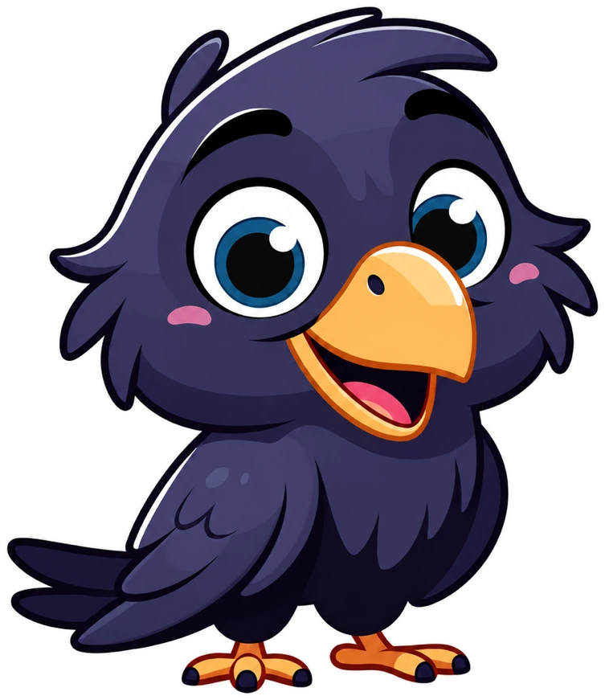

Say the word.
Speak with Gladia or type your task. Start from Raven Agent or your iPhone.
YOUR VOICE → A MISSIONTell it what to test. Watch it fly.
Voice-driven QA that takes your apps under its wing.

No scripts to babysit. No guessing what happened.
A clear plan, real interactions, and a verdict
you can actually follow.
Speak with Gladia or type your task. Start from Raven Agent or your iPhone.
YOUR VOICE → A MISSIONDevin reads the target repo and turns your request into a validated QA plan.
DEVIN → THE FLIGHT PLANH Company’s Holo4 agents click, type, and check real interfaces on your selected targets.
H COMPANY → REAL COMPUTER USELinkup adds web context on failure. Explicit fix & retry brings Devin back, with your approval.
YOU → ALWAYS IN CONTROLLittle wings. Clear boundaries. Every run ends with PASSED or FAILED. Repairs need per-operation approval; a missing deployment is a blocker, not a pretend pass.
Native apps don’t live in a browser tab.
Raven meets them where they are.
Our demo follows bitchat messages over Nostr geohash channels. A receive-side bug is planted in the Swift and Linux clients. The Windows client stays unmodified.
Raven’s mission? Follow the checks. Spot the mismatch. Bring back the evidence.
Explore the test suites ↗01 macOS sends a message ✓
02 Check receiving clients ✓
03 Receive-side mismatch !
A caught bug is a good landing.
A desktop home built on t3code. Start a mission, speak a prompt, and follow the agent’s work.
Your iPhone, your command center. Agent chat threads and voice in an all-black SwiftUI app.
Open source. A little opinionated. Very observant.
Explore Raven on GitHub ↗